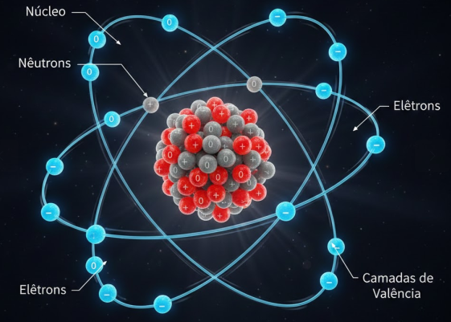
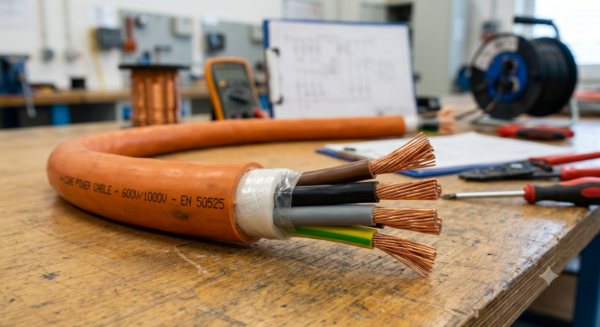

Guia em Instalações Elétricas Residenciais | Aula 1: Fundamentos em Eletricidade
O Princípio, Átomos, e Materiais Elétricos
O Princípio da Eletricidade
A eletricidade surge da movimentação de cargas elétricas. Nas residências, essa energia percorre condutores para alimentar aparelhos e iluminação.
Os Átomos e Elétrons
Tudo é formado por átomos. No centro temos o núcleo, e ao redor orbitam os elétrons. Materiais que permitem o movimento desses elétrons são fundamentais para a elétrica.

Figura 1: Representação de um átomo e seus elétrons.
Eletricidade Estática: O que é?
Diferente da eletricidade que usamos nas tomadas — onde os elétrons estão em movimento constante (corrente elétrica) —, a eletricidade estática ocorre quando há um acúmulo de cargas elétricas em repouso na superfície de um corpo.
Esse fenômeno acontece principalmente por atrito. Quando dois materiais diferentes entram em contato e são esfregados, um deles costuma perder elétrons (ficando carregado positivamente) enquanto o outro ganha elétrons (ficando carregado negativamente). Como esses materiais geralmente são isolantes, as cargas não conseguem circular e ficam "presas" na superfície até encontrarem um caminho para se descarregar.
Onde encontramos a Eletricidade Estática no Dia a Dia?
O "Choque" ao sair do carro: Ao dirigir, o atrito do seu corpo com o estofamento do banco transfere elétrons. Quando você sai e toca na lataria de metal do veículo, ocorre uma descarga rápida em direção à terra, gerando aquele pequeno estalo ou faísca na ponta dos dedos.
Cabelos arrepiados ao tirar o agasalho: Roupas de lã ou tecidos sintéticos acumulam muita carga por atrito. Ao retirar uma blusa de frio rapidamente, a eletricidade estática faz com que os fios de cabelo se repelam mútua e temporariamente, deixando-os arrepiados.
Tela da TV ou Monitor atraindo poeira: Aparelhos eletroeletrônicos geram campos eletrostáticos ao redor de suas telas. É por isso que, mesmo limpando constantemente, a poeira do ambiente é rapidamente atraída e gruda no visor.
O Pente e os pedacinhos de papel: Um clássico experimento prático: ao passar um pente plástico várias vezes no cabelo seco e aproximá-lo de pequenos pedaços de papel, o pente (agora eletrizado) consegue atraí-los sem sequer tocá-los.
Os Raios na atmosfera: Na natureza, o atrito severo entre cristais de gelo e gotas de água dentro das nuvens de tempestade gera um acúmulo gigantesco de eletricidade estática. Quando essa carga supera a capacidade isolante do ar, ela se descarrega violentamente até o solo ou entre nuvens, criando os relâmpagos.
Aviso de Segurança Industrial: Embora no dia a dia a eletricidade estática pareça apenas uma distração inofensiva, em ambientes industriais com presença de gases inflamáveis ou poeiras combustíveis, uma única faísca eletrostática pode provocar explosões. Por isso, técnicos utilizam calçados e pulseiras de aterramento para descarregar o corpo constantemente.
Materiais Condutores e Isolantes
A resistividade (ρ) define se um material ajuda ou atrapalha a passagem da corrente.
Classificação
Material
Resistividade (ρ)
Condutores
Prata
0,0159 Ω·m/mm2
Cobre
0,0172 Ω·m/mm2
Ouro
0,0244 Ω·m/mm2
Alumínio
0,0282 Ω·m/mm2
Isolantes
Vidro
1010 Ω·m a 1014 Ω·m
Borracha
1013 Ω·m
Cerâmica
1014 Ω·m
PVC
1014 Ω·m

Figura 2: Cabo de cobre com isolação em PVC.
Dica Prática: Por que usamos Cobre?
Ao observar nossa tabela de resistividade, vemos que a Prata é o melhor condutor que existe. No entanto, usamos o Cobre nas instalações residenciais por um equilíbrio entre excelente condução e custo acessível. O alumínio é usado apenas em casos específicos (como redes de alta tensão na rua) por ser mais leve e barato, apesar de ter maior resistividade que o cobre.
Analogia para facilitar: Pense na eletricidade como uma rodovia. Os Condutores são estradas asfaltadas e livres. Os Isolantes são como grandes bloqueios ou muros que impedem os carros (elétrons) de seguir caminho.
Exercícios de Fixação (Teste seu Conhecimento!)
Exercício 1: Estrutura Atômica
Qual é a partícula do átomo que possui carga elétrica negativa, localiza-se na região externa (órbita) e cuja movimentação ordenada dá origem à corrente elétrica que utilizamos nas residências?
Resposta Correta
Gabarito: Os Elétrons.
💡 Enquanto os prótons (positivos) e nêutrons (neutros) ficam rigidamente presos no núcleo do átomo, os elétrons possuem liberdade de órbita e, nos materiais condutores, conseguem se desprender para formar o fluxo elétrico.
Exercício 2: Análise de Condutividade
Consultando a tabela de resistividade apresentada nesta aula, a prata possui uma resistividade menor que a do cobre (ρ_prata = 1,59 x 10⁻⁸ Ω·m vs ρ_cobre = 1,72 x 10⁻⁸ Ω·m). Por que, então, as instalações elétricas das nossas casas são feitas com fios de cobre e não de prata?
Resposta Correta
Gabarito: Devido ao fator econômico (relação Custo-Benefício).
💡 Embora a prata seja ligeiramente superior na condução, ela é um metal precioso extremamente caro. O cobre oferece uma condutividade excelente a uma fração minúscula do custo da prata, tornando viável o cabeamento em larga escala de uma habitação.
Exercício 3: Propriedades dos Isolantes
O PVC (Policloreto de Vinila) é largamente utilizado na fabricação de cabos elétricos residenciais. Qual é a principal função física do PVC nesse componente e qual propriedade da tabela justifica seu uso?
Resposta Correta
Gabarito: Isolar eletricamente o condutor metálico; justificado por sua altíssima resistividade (10¹⁴ Ω·m).
💡 O PVC atua como uma barreira física que bloqueia a saída dos elétrons para fora do fio. Devido à sua resistência colossal, ele impede curtos-circuitos e protege os usuários contra choques elétricos fatais ao manusearem os cabos.
Exercício 4: Fenômenos Eletrostáticos
Ao caminhar de meias sobre um tapete de material sintético num dia seco e, em seguida, tocar na maçaneta metálica de uma porta, você sente um pequeno estalo. Explique resumidamente o mecanismo que causou esse evento.
Resposta Correta
Gabarito: Ocorreu uma eletrização por atrito seguida de uma descarga eletrostática rápida.
💡 O atrito contínuo entre a meia e o tapete "arrancou" ou transferiu elétrons para o seu corpo, acumulando eletricidade estática. Ao aproximar a mão da maçaneta (um material condutor metálico), esse excesso de carga saltou rapidamente pelo ar, gerando a faísca e a sensação do pequeno choque.
Exercício 5: Conceito de Resistividade
Se aumentarmos a temperatura de um pedaço de fio metálico condutor, a agitação dos seus átomos internos aumenta, criando mais obstáculos para a passagem dos elétrons livres. Baseado nisso, o que acontecerá com o valor da sua resistividade (ρ)?
Resposta Correta
Gabarito: O valor da resistividade (ρ) irá aumentar.
💡 A resistividade não é totalmente fixa; ela varia com a temperatura. Quanto mais quente o metal condutor fica, maior é a oposição interna ao fluxo ordenado de elétrons, o que significa que materiais superaquecidos conduzem pior a eletricidade (reforçando a importância de não sobrecarregar fiações!).